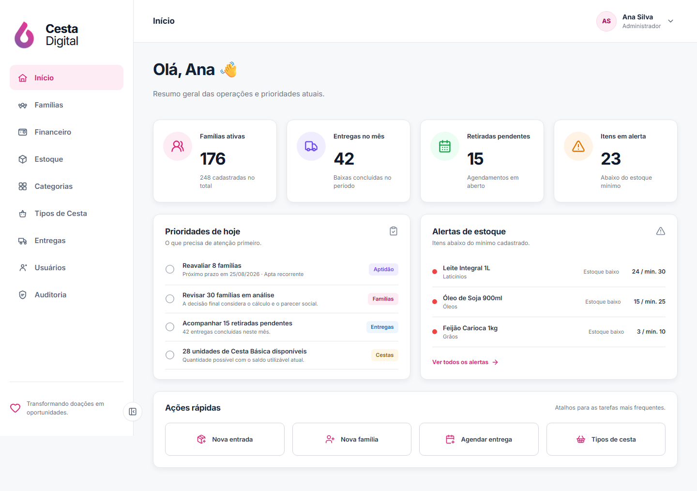
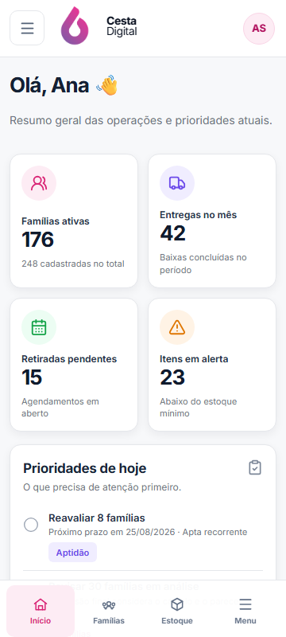
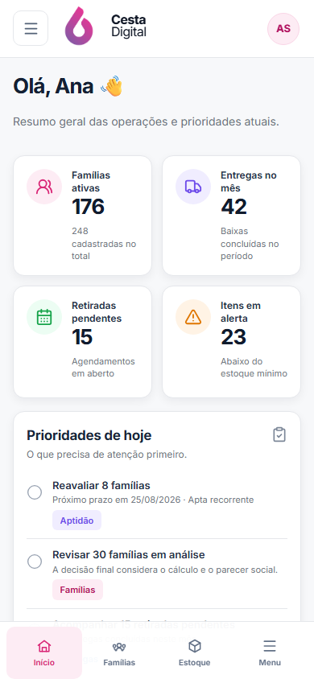
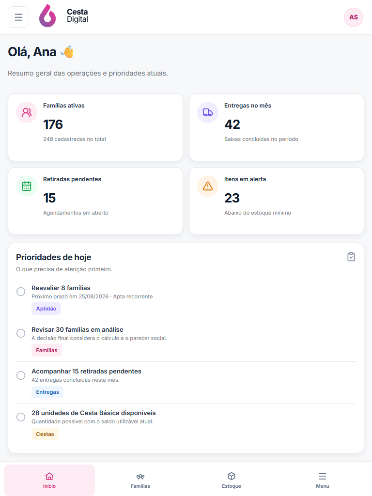

V2-05 · Início
Comparação da referência aprovada com a implementação real em desktop, tablet e mobile.
Aguardando aprovação visualReferência × implementação
Clique em qualquer imagem para abrir a captura no tamanho original.


Adaptação responsiva
Mobile tem composição própria, sem tabela comprimida nem rolagem horizontal.



Diferenças funcionais deliberadas
Dados reais
“Entradas hoje” foi substituído por retiradas pendentes, campo existente em DashboardOverviewResponse.
Aptidão explícita
Reavaliações aparecem como prioridade para recalcular aptidão, unindo cálculo e parecer social.
Rotas válidas
“Relatório rápido” não foi simulado; o quarto atalho leva aos tipos de cesta já disponíveis.